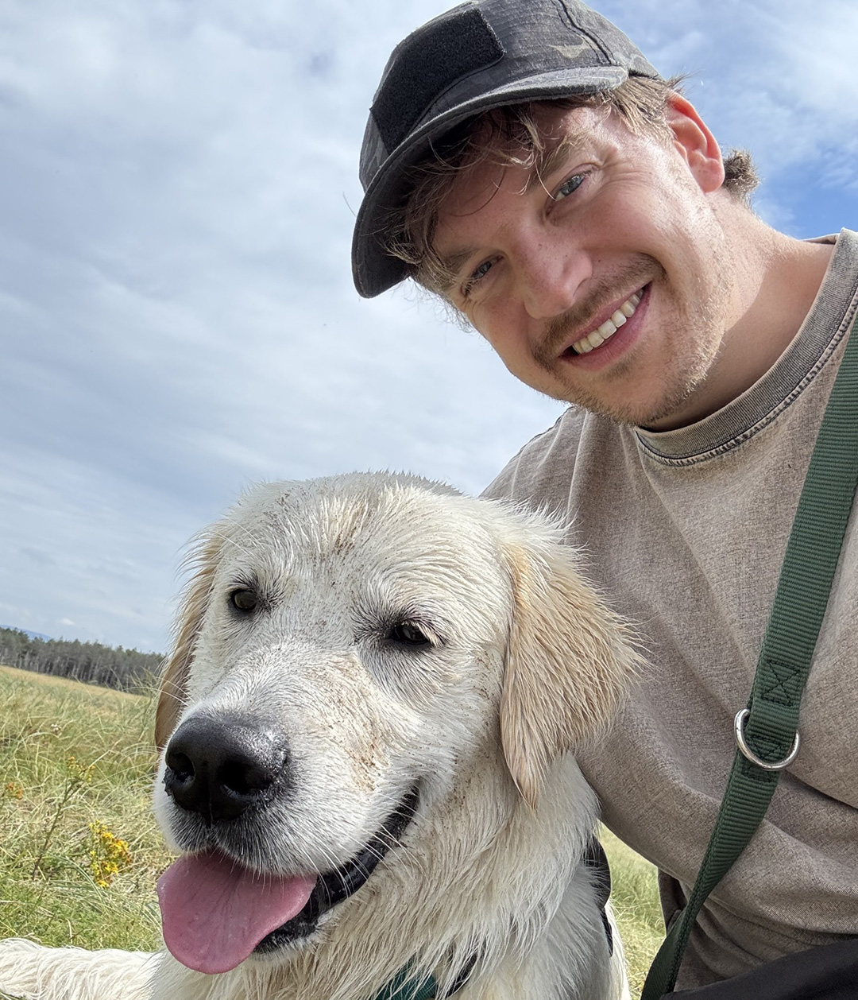

Static assets weren't holding attention or explaining ideas quickly enough, a still image can only tell so much of the story.
I transformed static concepts into fluid, animated narratives, using motion to guide the viewer's eye and build emotional impact scene by scene.
Content that explains itself in seconds, holds attention longer, and carries brand personality a static image can't.
Product and campaign stories needed a format that felt alive, not just another talking-head video lost in the feed.
Dynamic video content, pacing, colour and movement combined to tell a great story with vibrancy and dynamism.
Video that supports launches and campaigns with clarity and energy, built to hold attention on fast-scrolling platforms.
Cubic³ was repositioning from a connectivity provider to a global connected mobility technology company, but had no visual system built for that story. The brand needed to make complex technology feel accessible and premium, consistently, across a fast-moving global marketing org.
I led the visual development of the new design language across digital, product, campaign and marketing applications, atmospheric imagery, 3D forms, colour, lighting and graphic elements combined into a system that flexes across products and communications. Then I codified it: master templates with embedded brand fonts, a defined type/colour/layout system, and a set of AI tools that generate and rebrand material directly against the brand rules, including a review agent that checks output before it reaches a stakeholder.
Deck and document turnaround down 50%. Full marketing team onboarded to the toolset within three months of rollout. Sales, product and marketing now produce their own collateral, on brand, without design input. Efficiency saving modelled at €250k annually at under 15% company-wide adoption.
Campaign content across social channels needed to stand out in a crowded feed while staying recognisably on-brand.
Custom designs built for digital campaigns, focused on clarity, colour and brand identity across every post.
A consistent, scroll-stopping presence across social channels that still reads instantly as the brand.
Brand guidelines were being loosely applied, if at all. Every on-brand presentation, document, proposal or data visualisation needed a designer. A hard bottleneck for any design function serving a global marketing organisation.
I built and maintain an AI-powered design system in Claude that turns brand guidelines into something that applies itself: the brand encoded as machine-readable rules, so anyone in the business can generate on-brand material. I own the whole thing: the design decisions, the build, the versioning, and a quality layer that reviews output before it ships.
A design function now serves a global marketing organisation at scale, generating on-brand presentations, documents, proposals and data visualisations without becoming the bottleneck.
Visual output across teams was inconsistent; different tools, different hands, no shared design language tying it together, so quality and tone varied depending on who touched it last.
I defined a graphic design language spanning type, colour, layout and imagery, and applied it consistently across formats and channels, so anything the brand produces reads as one voice rather than a patchwork of one-offs.
A consistent visual language that scales across channels, faster design decisions, and a brand that's recognisable everywhere it shows up.
Packaging is often the first physical contact a customer has with a brand, on a shelf or on a doorstep, it needed to earn that moment.
Product packaging designed to attract attention, reflect brand identity, and enhance the unboxing experience from first glance to first touch.
Products that stand out on the shelf, and packaging that makes the unboxing feel considered rather than incidental.
I got sick of wearing other people's brands.
I made my own, Perch.
A clothing brand that signifies a laid-back style of living with warm pastel colours, a beach vibe and chilling by the sunset.

Event booths compete for attention in a room full of other booths, generic graphics get walked straight past.
Stand and booth graphics designed to stand out at the event, built around the same visual language as the rest of the brand.
A booth presence that stops people walking past and gets them walking in.
Promotional messages needed to cut through noisy channels without diluting the brand's tone.
Eye-catching visuals built to get the message across to the right people, boldly and without hedging.
Ads that get noticed and get read, not scrolled past.
Long-form print and editorial content needed structure that made dense information easy to navigate, not just decorate.
Magazines, annual reports and publications designed with clear hierarchy, readability, and layouts that hold together across dozens of pages.
Publications that read beautifully and guide the reader through, page after page.
Interfaces needed a consistent visual shorthand instead of a mismatched grab-bag of stock icon sets.
Custom icons and visual assets built for digital products, apps and interfaces, designed as one coherent family.
Interfaces that feel considered and consistent, with icons that improve recognition rather than just filling space.
Decks were being rebuilt from scratch every time, inconsistent in look, and slow to pull together under deadline pressure.
A consistent template system for pitch decks, board packs and internal reviews, designed to look sharp and read clearly under pressure.
Decks that come together faster, look consistent deck to deck, and keep the story the focus instead of the formatting.
Digital products needed interfaces that were clean and usable without losing consistency between what's designed and what actually ships.
Interface design for digital products; clean, usable layouts that hold up across screen sizes, built with a shared visual language between design and development.
Products that feel considered to use, with design and shipped product staying in sync instead of drifting apart.
Product and campaign photography needed the same level of care as the brand work it was meant to represent.
Directing and shooting product and campaign photography; composition, lighting and styling handled with the same eye that goes into the rest of the brand work.
Photography that looks like it belongs to the brand, not stock-photo filler bolted on afterward.
I'm a Dublin-based senior graphic designer and motion graphics artist with over eight years of experience leading design functions and creative strategy. Creating thoughtful visual work that communicates clearly and connects with audiences. My background spans brand identity, digital campaigns, print design, motion graphics, and visual storytelling.

Hi, I'm Niall! I'm a senior designer but I also have a life outside of work. I am from Sligo, you might recognise the background art. I really enjoy making art (I drew the background image here and its hung on my wall at home) I love to walk my dog, surf, hike, run, act and play music (really badly).
I love to cook and I am learning to speak Italian! I'm getting pretty good at one of these things.
If you'd like to collaborate or discuss a project, drop me a line.
Email MeNothing in here. Every project on this desktop made the cut.